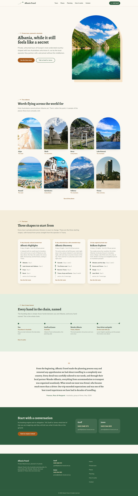
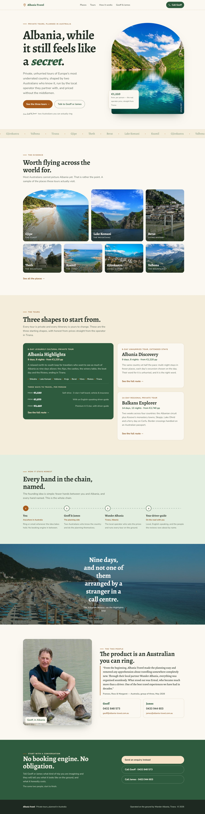

The current Albania Travel home page was built by the standard workflow: a stack of full-width blocks. I rebuilt the same home on the same real content, photography and brand, but with the layout composed freely. Then an independent art-director review scored both. Here is the before, the after, and the honest verdict.
Yes. The current build needed the upgrade. On identical content, the freeform rebuild scored 8/10 against the current build's 6 from an independent art-director review. The current build is competent and honest, but it can only stack full-width bands, so it reads as a good template rather than a site made for this business. Freeing the layout is what turns the brand's real weapon (credibility, real photography, two named people you can ring) up to full volume.
And the current build ships a real bug. Five of its six sections start invisible and only appear once you scroll to them, so on first paint or a fast scroll the page looks half-empty. The upgrade fixes that with a reveal that cannot leave content hidden.
The review also earned its keep. It caught four things to fix on the upgrade before showing anyone (all now fixed) plus two content-truth details for Geoff to confirm before it ever goes live. That safety pass is exactly what lets the studio stop checking every build by hand.
Hero, a uniform grid of arched cards, three equal tour cards, a chain band, one quote, a CTA band. Nothing broken by design, but nothing that could only be this business. This is the ceiling James felt stuck under.

Oversized headline with the real from-price beside it, a place-name index, an asymmetric photo mosaic, a lead tour with its route and price tiers, a connected honesty chain, a full-bleed moment, and Geoff's real portrait. Redesigned for mobile.

| Dimension | Current | Upgrade |
|---|---|---|
| Layout ambition | 5 | 9 |
| Typography | 7 | 8 |
| Imagery use | 6 | 9 |
| Brand fit | 8 | 8 |
| Craft / finish | 7 | 8 |
| Trust on sight | 7 | 9 |
| Overall | 6.0 | 8.0 |
From the independent review. This is the safety net that replaces checking every build by hand.
built for James, on the same idea we proved on NJ Electrical